• 50M/100M/120M Rangefinder:Measure distances with precision using the 50M/100M/120M rangefinder, making it perfect for various applications.
• Rechargeable Power Type :No need to worry about replacing batteries as the rechargeable power type ensures long-lasting use.
• Professional Meter Laser Range Finder:This professional meter laser range finder is designed to provide accurate measurements, making it ideal for professional use.
• Ruler Test Tool :The ruler test tool feature allows for easy and accurate measurement of objects, making it a versatile tool for various applications.
Laser Distance 50M [M]]
Hilda laser measuring device
There are three measurement lengths (50m/100m/120m) that can be purchased according to your own needs
Laser measurement has four measurement modes to choose from: length, area, volume, or continuous measurement mode. Use continuous mode for continuous measurement and display small and large values on a high-quality screen.
50M CJ390 and 120M CJ392 are USD charging styles
100M CJ368/120M CJ369 does not include batteries and uses AAA batteries
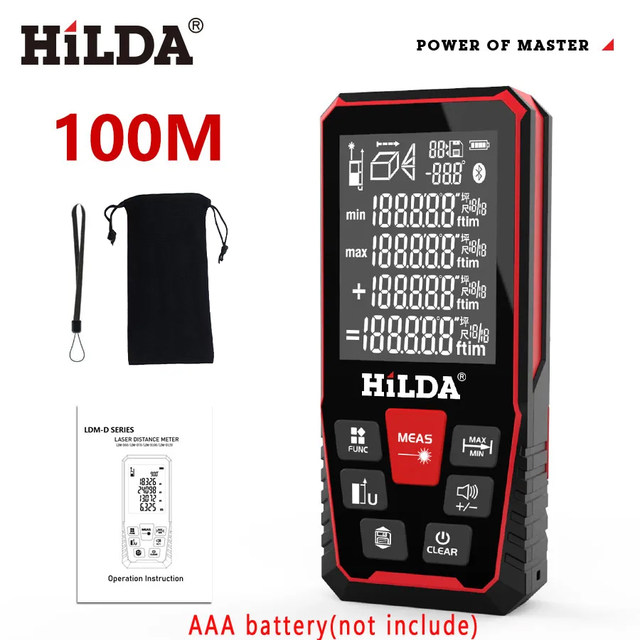
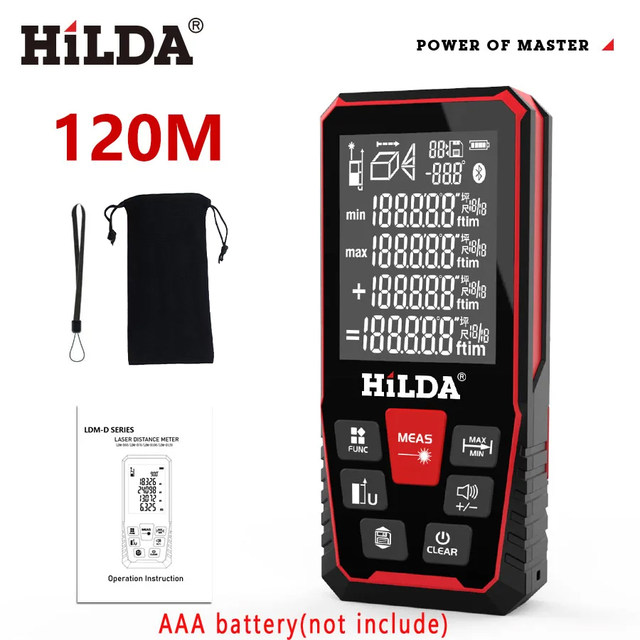
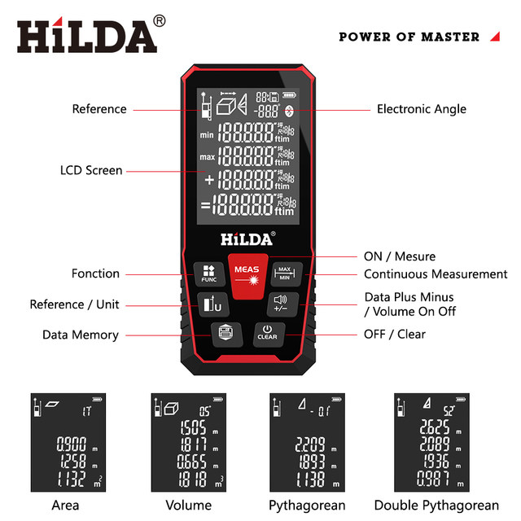
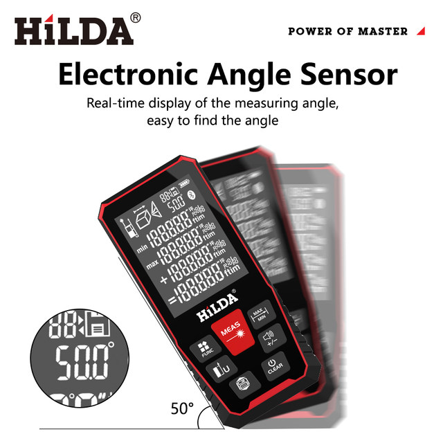
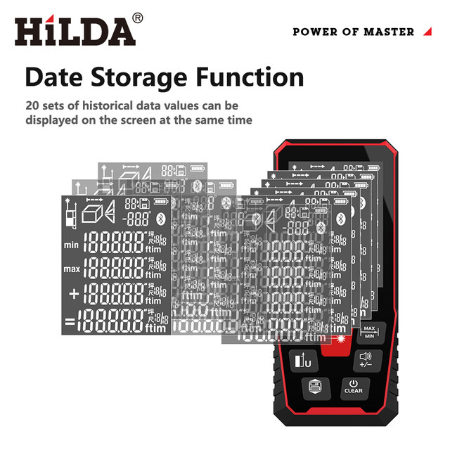
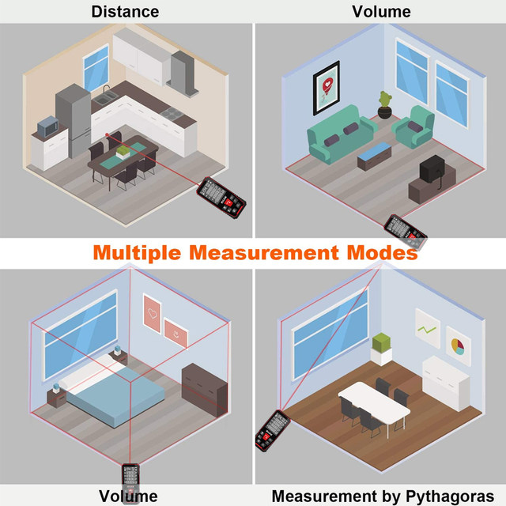
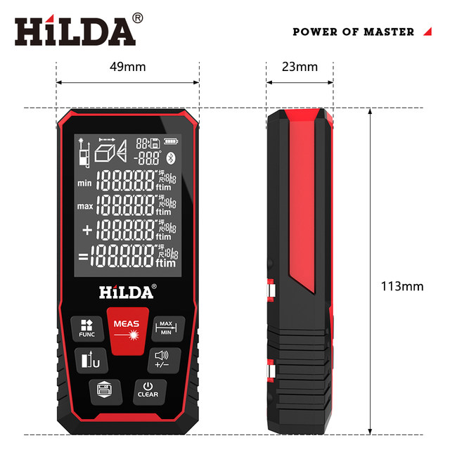
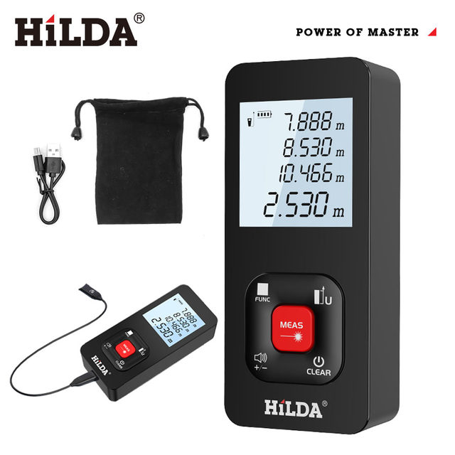
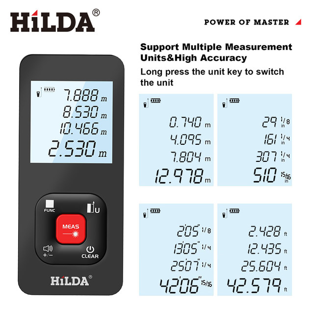
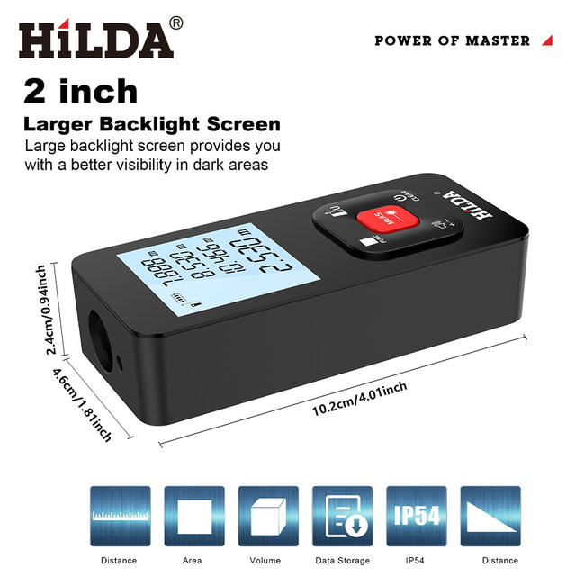
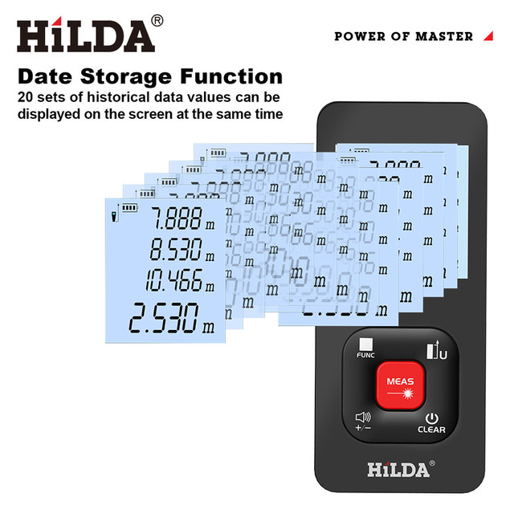
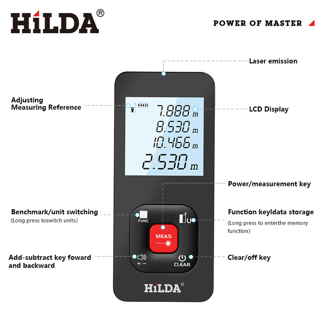
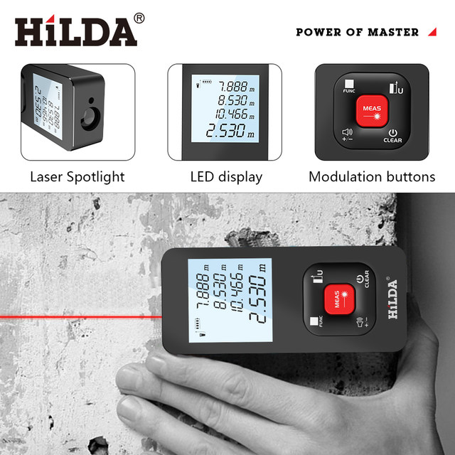
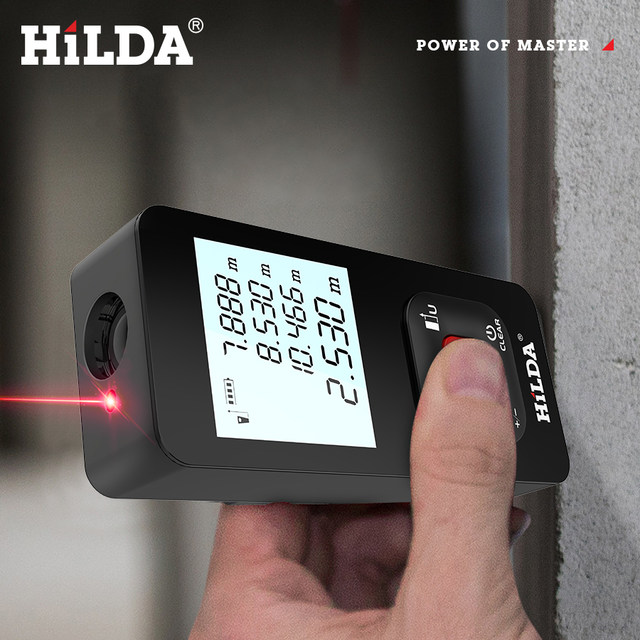